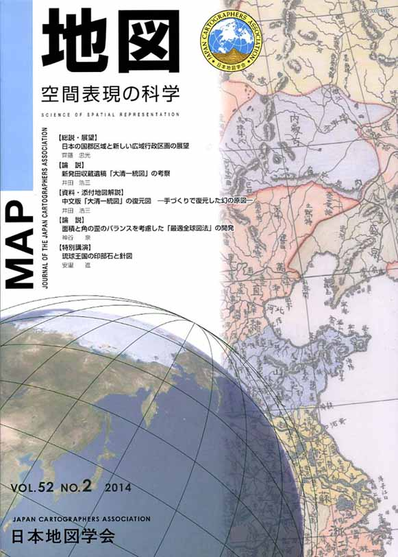
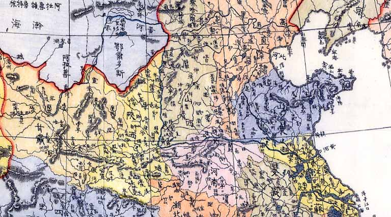

| 最 新 号 | バックナンバー | 添付地図目録 | 投 稿 規 程 |
Vol.52 No.２ （通巻２０６号） ２０１４年
| 【総説・展望】 | 日本の国郡区域と新しい広域行政区画の展望 | 齊藤忠光 |
| キーワード：国郡、郡区域、廃藩置県、広域行政区画、道州制 | ||
| 【論説】 | 新発田収蔵遺稿「大清一統図」の考察 | 井田浩三 |
| キーワード：大清一統図、新発田収蔵、岸田吟香、中国総論、サミュエル・ウィリアムズ | ||
| 【資料・添付地図解説】 | 中文版「大清一統図」の復元図−手づくりで復元した幻の原図− | 井田浩三 |
| 【論説】 | 面積と角の歪のバランスを考慮した「最適全球図法」の開発 | 神谷 泉 |
| キーワード：地図投影法、歪、評価、最小化 | ||
| 【特別講演】 | 琉球王国の印部石（しるびいし）と針図 | 安里 進 |
| キーワード：琉球国之図、印部石、針図、三角点網、平安、蔡温 | ||
| 【書評・紹介】 | 地形のヒミツが見えてくる 体感！東京凸凹地図 | 小荒井 衛 |
| 【特別会員名簿】 | ||
| 【リレーメッセージ：地図・地図学への思い】 | 地図の思い出 | 田邉 裕 |
| 【学会記事】 | ||
| 【漆付地図】 | Samuel W．Williams（1847）製作の中文版「大清一統図」の復元図 | |
|
≪No.52 No.2 表紙≫ |
|
|  |
|
|
|
≪No.52 No.2 添付地図≫ |
|
 本図を許可なく複製・利用することを禁止します。
|